Image Processing
with OpenCV
Stereobildverarbeitung
Prof. Dr. rer. nat. R. Reulke - WS14/15
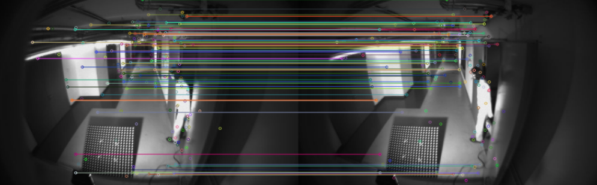
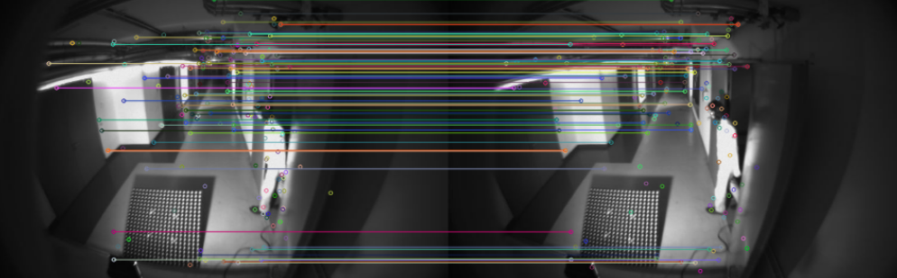

OpenCV is an open source library that includes hundreds of Computer Vision algorithms.
At the current status, it's divided in two branches:
It's organized in modules, each one of them containing specific algorithms and functions.
Data structures and functions begin with
Declaration of a matrix and a point:
cv::Mat a_matrix; cv::Point2i a_point;
Execution of a function:
cv::absdiff(A, B, C);
OpenCV's functions accepts data types such as InputArray, OutputArray, InputArrayOfArray or OutputArrayOfArray.
As InputArray or OutputArray, you can use:
cv::Mat
std::vector<>
cv::Scalar[]
cv::Vec<>
As InputArrayOfArray or OutputArrayOfArray you can use:
std::vector< std::vector<> >
In addition to unsigned char, bool, signed char, unsigned short, signed short, int, float, double, OpenCV has its own data types:
CV_
Examples:
CV_8UC1 //8 bit unsigned char single channel
CV_32FC3 //32 bit floating point 3 channels
cv::Mat A(5, 5, CV_8UC1); //5x5 matrix 8 bit uchar single channel
A point in OpenCV is defined as follow:
cv::Point2i point1(-100, 100); //integer coordinates
cv::Point2f point2(-2.5, 180.0); //single precision float coordinates
cv::Point2d point3(-3.9653, 192.0); //double precision float coordinates
cv::Point3i point4(-100, 100, 10); //integer 3d point
Usages:
pointt3 = point1 + point2; pt1 *= pt1; double val = cv::norm(point2); //Normal
A rectangle is defined as a point, then a width and a height:
cv::Rect2(i|f|d) rect(x_start, y_start, width, height);
cv::Rect2i a_rect(0, 0, 100, 50); //integer coordinates and sizes
Usages:
double area = a_rect.area();
cv::Point2i top_left = a_rect.tl(); //truncated if rect is Rect2d
auto top_left = a_rect.tl(); //C++11: type is detected by compiler
if(a_rect.contains(a_point)) {...} //rect contains a point?
A matrix is a n-dimensional single or multi-channel array. It stores images, voxels, vector fields, complex values, point clouds, histograms. OpenCV uses the following convention:
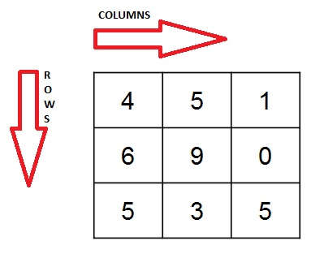
To Access elements of a Mat with type CV_8UC1:
for(int i = 0; i < mat.rows; ++i)
for(int j = 0; j < mat.cols; ++j)
mat.at<unsigned int>(i,j) = 0; //extract grayscale values
To Access elements of a Mat with type CV_8UC3:
for(int i = 0; i < mat.rows; ++i)
for(int j = 0; j < mat.cols; ++j)
cv::Vec3b rgb = mat.at<cv::Vec3b>(i,j); //extract RGB values
Usages:
cv::Mat matrix(rows, cols, type);
cv::Mat matrix(3, 4, CV_8UC1);
cv::Mat matrix(3, 4, CV_8UC1, cv::Scalar(10));
cv::Mat matrix = cv::Mat::zeros(3,3, CV_64F);
cv::Mat matrix = cv::Mat::eye(3,3, CV_32F);
M.at
using namespace cv;
absdiff(InputArray A, InputArray B, OutputArray C);
add(InputArray A, InputArray B, OutputArray C);
subtract(InputArray A, InputArray B, OutputArray C);
multiply(InputArray A, InputArray B, OutputArray C);
divide(InputArray A, InputArray B, OutputArray C);
bitwise_and(InputArray A, InputArray B, OutputArray C);
bitwise_or(InputArray A, InputArray B, OutputArray C);
bitwise_xor(InputArray A, InputArray B, OutputArray C);
bitwise_not(InputArray A, OutputArray B);
invert(InputArray A, OutputArray B);
transpose(InputArray A, OutputArray B);
#include <opencv2/highgui/highgui.hpp>
std::string image_path("/path/to/image/example.jpg");
cv::Mat image;
cv::Mat image_gray_scale;
/* Opening an image file */
image = cv::imread(image_path, 1); //or cv::imread(image_path);
image_gray_scale = cv::imread(image_path, 0); //note the 0
#include <opencv2/highgui/highgui.hpp> //OpenCV 2.4.x API
//#include <opencv2/videoio/videoio.hpp> //OpenCV 3.x API
std::string video_path("/path/to/video/example.avi");
cv::Mat image;
/* Opening a video file */
cv::VideoCapture capture(video_path); //opens the video
while(capture.grab())
{
capture.retrieve(image); //stores a frame into cv::Mat
cv::imshow("VideoFile", image); //shows the captured frame
if(cv::waitKey(30) >= 0) break; //wait 30ms for an input key
}
#include <opencv2/highgui/highgui.hpp> //OpenCV 2.4.x API
//#include <opencv2/videoio/videoio.hpp> //OpenCV 3.x API
cv::Mat image;
/* Opening a video file */
cv::VideoCapture capture(0); //opens any video source
while(capture.grab())
{
capture.retrieve(image); //stores a frame into cv::Mat
cv::imshow("VideoCamera", image); //shows the captured frame
if(cv::waitKey(30) >= 0) break; //wait 30ms for an input key
}

Image manipulations involve the usage of filters.
A

OpenCV offers different smoothing algorithms, such as:
cv::blur()cv::GaussianBlur()cv::medianBlur()cv::bilateralFilter()#include <opencv2/imgproc/imgproc.hpp> ... // pass image_file as argument from command line cv::Mat src = cv::imread(image_file, 1 ); cv::Mat dst; cv::blur(src, dst, cv::Size(3, 3)); // Box Filter 3x3

#include <opencv2/imgproc/imgproc.hpp> ... // pass image_file as argument from command line cv::Mat src = cv::imread(image_file, 1 ); cv::Mat dst; cv::Mat element = cv::getStructuringElement(cv::MORPH_RECT, cv::Size(3, 3)); cv::erode(src, dst, element);
 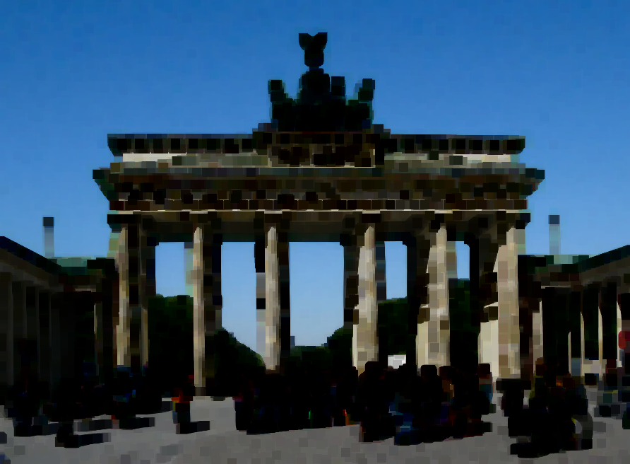
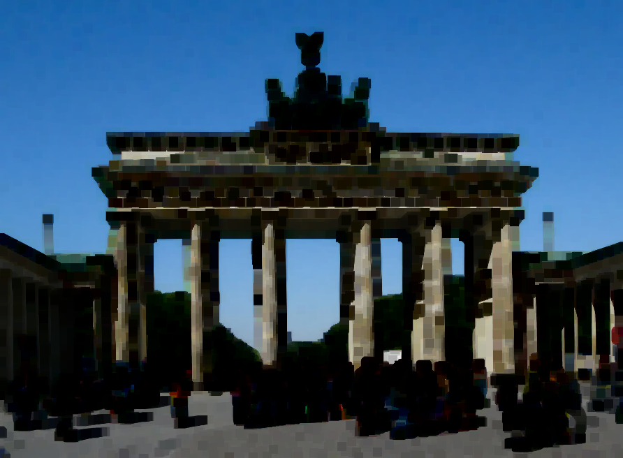
#include <opencv2/imgproc/imgproc.hpp> ... // pass image_file as argument from command line cv::Mat src = cv::imread(image_file, 1 ); cv::Mat dst; cv::Mat element = cv::getStructuringElement(cv::MORPH_RECT, cv::Size(3, 3)); cv::dilate(src, dst, element);
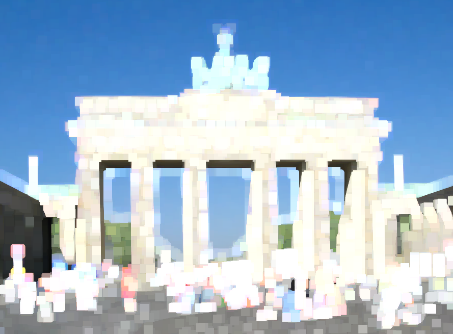
#include <opencv2/imgproc/imgproc.hpp> ... // pass image_file as argument from command line cv::Mat src = cv::imread(image_file, 0); //load as grayscale cv::Mat dst; cv::threshold(src, dst, min_val, max_val, 0); //Binary Threshold
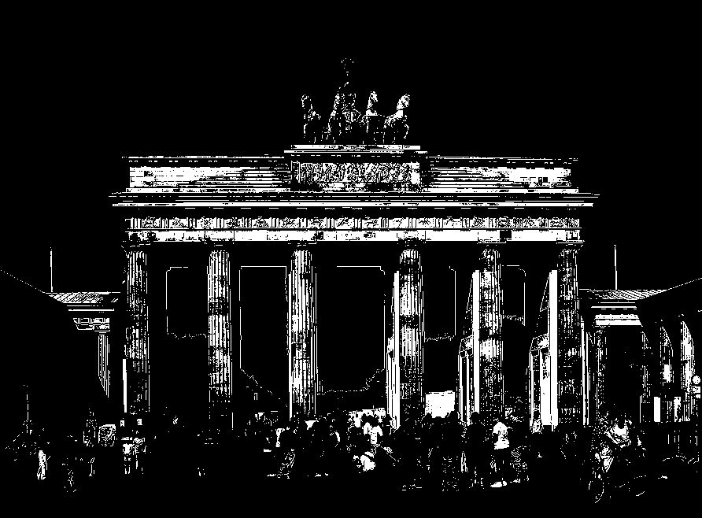
#include <opencv2/imgproc/imgproc.hpp> ... // pass image_file as argument from command line cv::Mat src = cv::imread(image_file, 1); //load as BGR cv::Mat dst; cv::cvtColor(src, dst,CV_BGR2HSV ); //OpenCV 2.4.x API cv::cvtColor(src, dst,cv::COLOR_BGR2HSV ); //OpenCV 3.x API
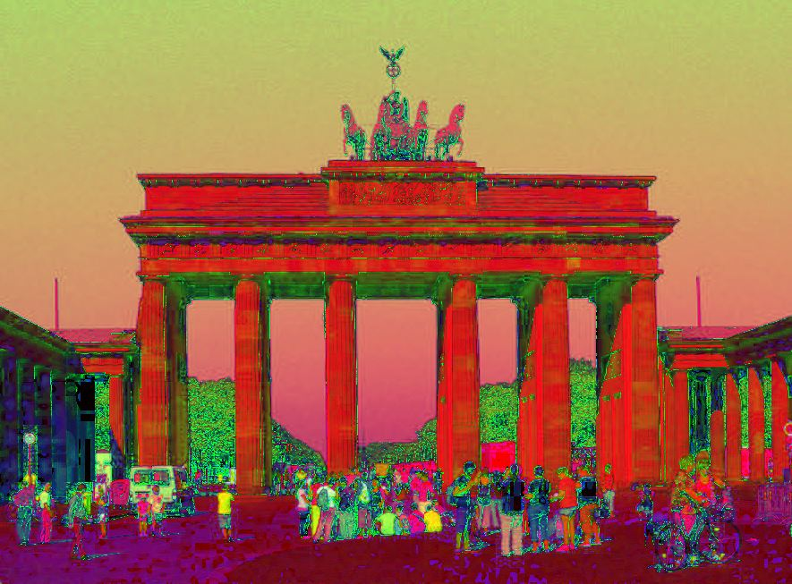
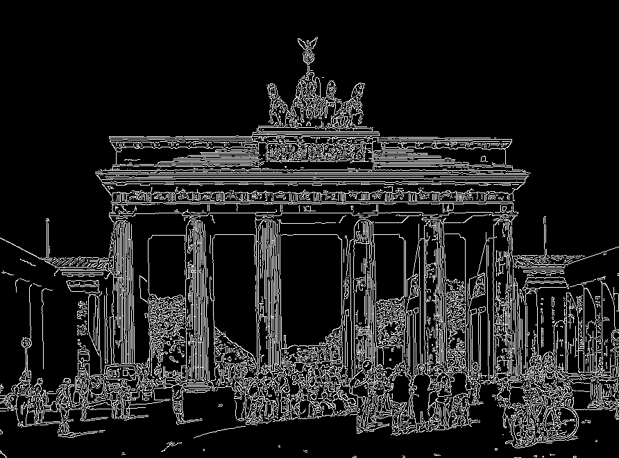
It's a graphical representation of the tonal distribution in a digital image. It plots the number of pixels for each tonal value.
Histograms are useful for edge detection and image segmentation.


#include <opencv2/imgproc/imgproc.hpp>
... // pass image_file as argument from command line
cv::Mat src = cv::imread(image_file, 0); //load as grayscale
cv::Mat dst, hist;
src.convertTo(dst, CV_8U); //force the conversion to 8 bit representation
cv::calcHist(&dst, 1, 0, cv::Mat(), hist, 1, &histSize, 0); //compute histograms
/* plot the histogram graph */
cv::Mat histImage = cv::Mat::ones(200, 320, CV_8U)*255; //the histogram container
cv::normalize(hist, hist, 0, histImage.rows, cv::NORM_MINMAX, CV_32F);
int binW = cvRound((double)histImage.cols/histSize); //approximation to next integer
for( int i = 0; i < histSize; ++i ) //drawing the histogram
cv::rectangle( histImage, cv::Point(i*binW, histImage.rows),
cv::Point((i+1)*binW, histImage.rows - cvRound(hist.at<float>(i))),
cv::Scalar::all(0), -1, 8, 0 );
cv::imshow("histogram", histImage);
Each pixel of a gradient image measures the change in intensity of that same point in the original image, in a given direction. To get the full range of direction, gradient images in the x and y directions are computed.
OpenCV includes some Gradient Image operators, such as:
void cv::Sobel(InputArray src, OutputArray dst, int depth,
int dx, int dy, int kernel_size, double scale_factor,
double delta, int border_type);
Compute Gradient along x direction:
#include <opencv2/imgproc/imgproc.hpp> ... // pass image_file as argument from command line cv::Mat src = cv::imread(image_file, 0); //load as grayscale cv::Mat dst; cv::Sobel(src, dst, CV_64F, 1, 0, 5);

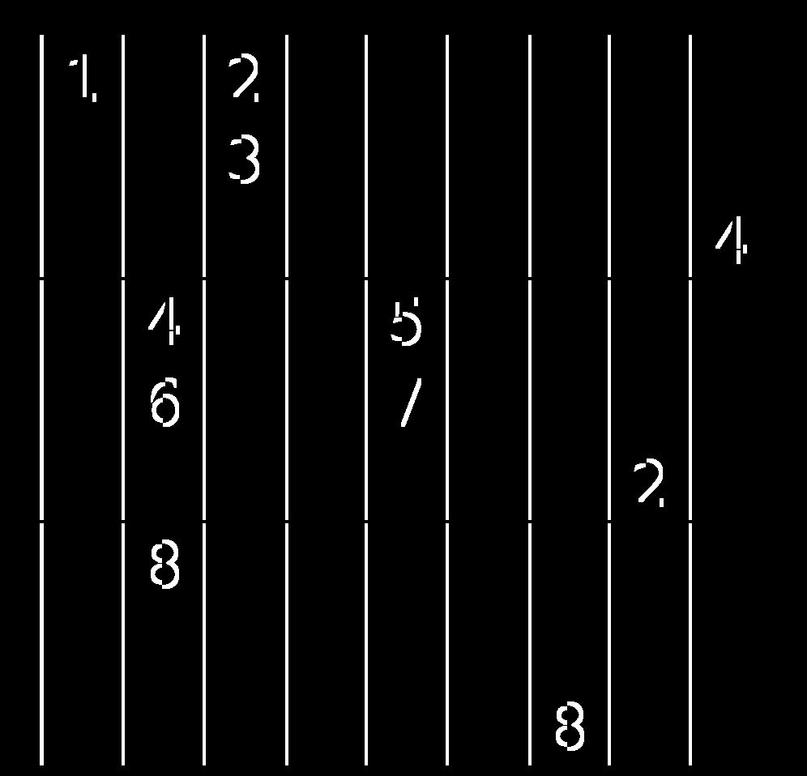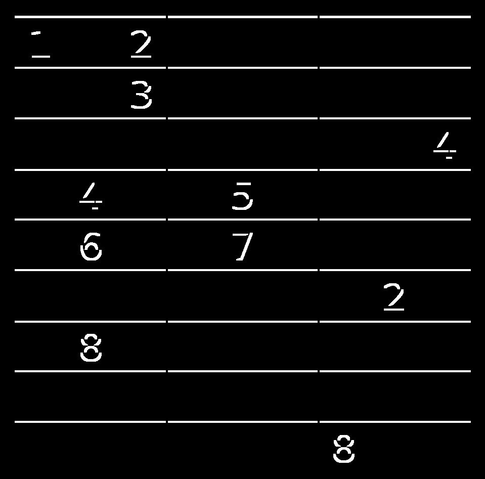
Canny edge detection is a four step process:
#include <opencv2/imgproc/imgproc.hpp> ... // pass image_file as argument from command line cv::Mat src = cv::imread(image_file, 0); //load as grayscale cv::Mat dst; cv::Canny(src, dst, min_threshold, max_threshold);
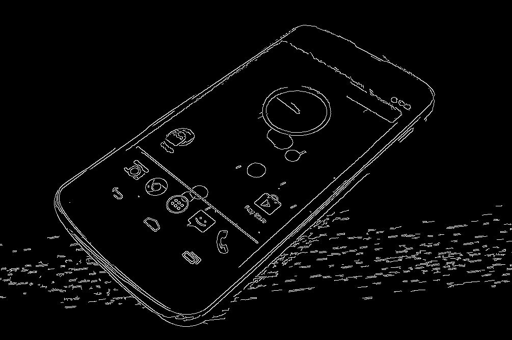
The Watershed Algorithm is based on the following steps:
 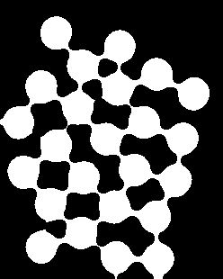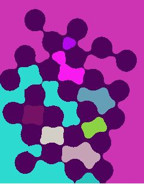
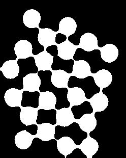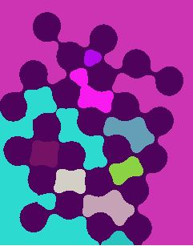
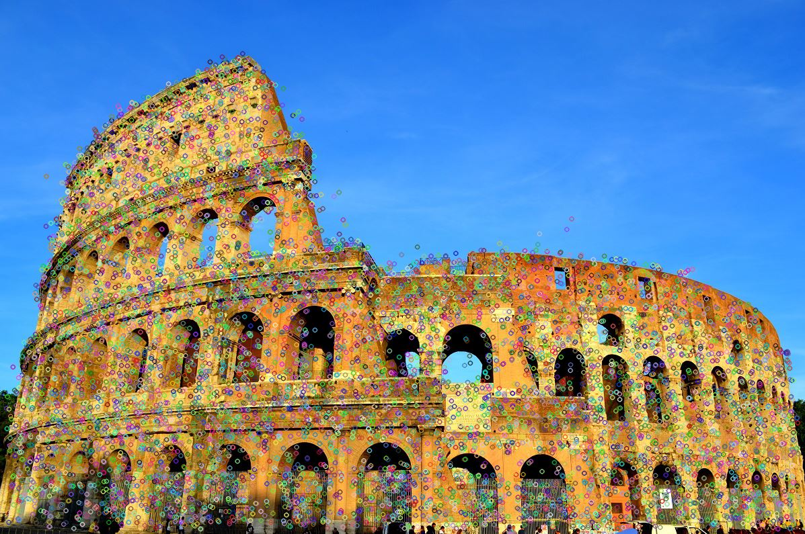
Detectors and Descriptors:
Matchers:
OpenCV 2.4.x requires nonfree module (disabled by default)
OpenCV 3.x requires contrib module (in opencv_contrib repository)
OpenCV 2.4.x:
#include <opencv2/features2d/features2d.hpp> //ORB and BRISK
#include <opencv2/nonfree/features2d.hpp> //SIFT and SURF
cv::Ptr<cv::BRISK> brisk_detector = cv::BRISK::create("BRISK");
cv::Ptr<cv::ORB> orb_detector = cv::ORB::create("ORB");
cv::SurfFeatureDetector surf_detector(num_max_keypoints);
cv::Ptr<cv::FeatureDetector> sift_detector = cv::FeatureDetector::create("SIFT");
OpenCV 3.x:
#include <opencv2/features2d/features2d.hpp> //ORB and BRISK #include <opencv2/xfeatures2d/nonfree.hpp> //SIFT and SURF cv::Ptr<cv::BRISK> brisk_detector = cv::BRISK::create(); cv::Ptr<cv::ORB> orb_detector = cv::ORB::create(); cv::Ptr<cv::Feature2D> surf_detector = cv::xfeatures2d::SURF::create(); cv::Ptr<cv::Feature2D> sift_detector = cv::xfeatures2d::SIFT::create();
#include <opencv2/features2d/features2d.hpp>
... //read two images, a full image and a template image
std::vector<cv::KeyPoint> templ_keypoints, full_keypoints;
cv::Mat templ_descriptors, full_descriptors;
std::vector<cv::DMatch> matches;
cv::Ptr<cv::ORB> orb_detector = cv::ORB::create("ORB");
orb_detector->detect(image_full, full_keypoints);
orb_detector->detect(image_template, templ_keypoints);
orb_detector->compute(image_full, full_keypoints, full_descriptors);
orb_detector->compute(image_template, templ_keypoints, templ_descriptors);
//Matching
cv::BFMatcher matcher(cv::NORM_HAMMING); //BruteForce
matcher.match(templ_descriptors, full_descriptors, matches);
///Some outliers matching method here (check examples source code)
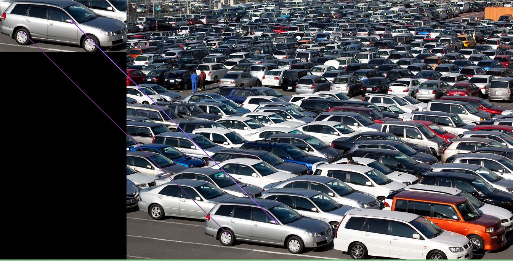
#include <opencv2/xfeatures2d/nonfree.hpp> ... //read two images, a full image and a template image std::vector<cv::KeyPoint> templ_keypoints, full_keypoints; cv::Mat templ_descriptors, full_descriptors; std::vector<cv::DMatch> matches; // Detection and Extraction - by default, SURF will try to find 100 keypoints cv::Ptr<cv::Feature2D> surf_detector = cv::xfeatures2d::SURF::create(); surf_detector->detect(image_full, full_keypoints); surf_detector->detect(image_template, templ_keypoints); surf_detector->compute(image_full, full_keypoints, full_descriptors); surf_detector->compute(image_template, templ_keypoints, templ_descriptors); // Computing matches using FLANN based approach cv::FlannBasedMatcher matcher; matcher.match(templ_descriptors, full_descriptors, matches); ///Some outliers matching method here (check examples source code)
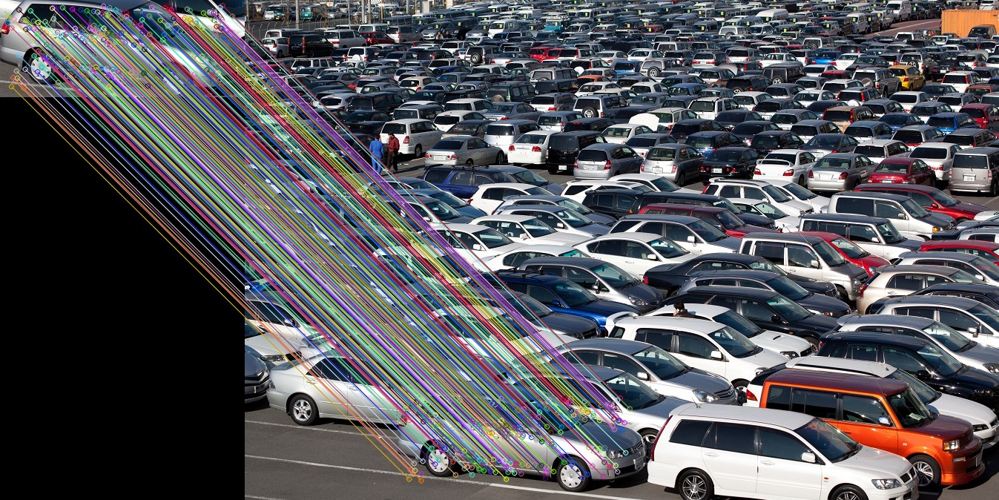
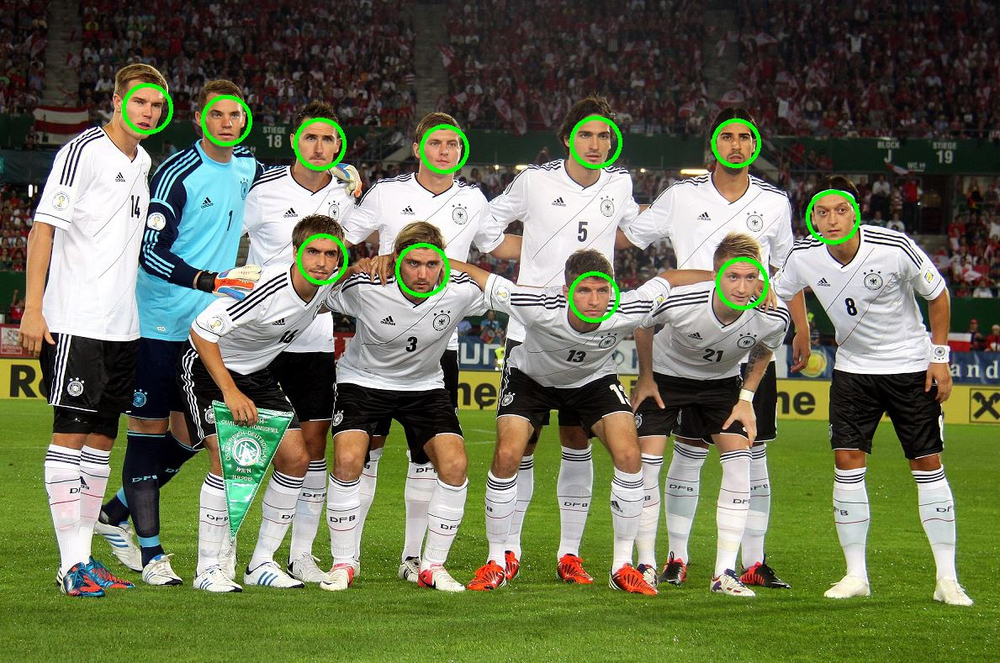
It can be based on histograms, image moments, image features, pixel distances.
Most used approaches include Motion History Images and Mahalanobis Distance using Hu Moments.
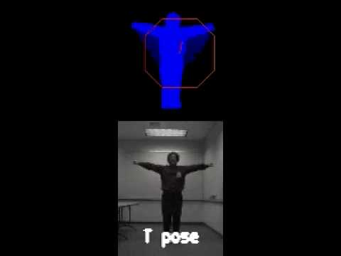
#include <opencv2/imgproc/imgproc.hpp>
... //load template and full images
cv::Mat result;
cv::matchTemplate(full, templ, result, match_method);
//Localizing the best match with minMaxLoc
double minVal = 0.0f, maxVal = 0.0f;
cv::Point minLoc, maxLoc, matchLoc;
cv::minMaxLoc(result, &minVal, &maxVal, &minLoc, &maxLoc);
//For SQDIFF and SQDIFF_NORMED, the best matches are lower values.
if( match_method == cv::TM_SQDIFF || match_method == cv::TM_SQDIFF_NORMED )
matchLoc = minLoc;
else //For all the other methods, the higher the better
matchLoc = maxLoc;
cv::rectangle(full, matchLoc,
cv::Point(matchLoc.x + templ.cols, matchLoc.y + templ.rows ),
cv::Scalar(0, 255, 0), 2, 8, 0 );
A classifier is trained with a few hundred sample views of a particular object (i.e., a face or a car), called positive examples, that are scaled to the same size (e.g., 20x20), and negative examples - arbitrary images of the same size.
After a classifier is trained, it can be applied to a region of interest (of the same size as used during the training) in an input image. The classifier outputs a "1" if the region is likely to show the object (i.e., face/car), and "0" otherwise.

#include <opencv2/objdetect/objdetect.hpp>
std::string face_cascade_name = "haarcascade_frontalface_alt.xml";
std::vector<cv::Rect> faces;
cv::Mat frame_gray;
cv::cvtColor( frame, frame_gray, cv::COLOR_BGR2GRAY );
cv::equalizeHist( frame_gray, frame_gray ); // Improve image contrast
// Detect faces
cv::CascadeClassifier face_cascade;
face_cascade.detectMultiScale(frame_gray, faces, 1.1, 10,
0 | cv::CASCADE_SCALE_IMAGE, cv::Size(30, 30));
for (auto face:faces) //draw faces
{
cv::Point center( face.x + face.width/2, face.y + face.height/2 );
cv::ellipse( frame, center, cv::Size( face.width/2, face.height/2 ), 0, 0, 360, cv::Scalar( 0, 255, 0 ), 4, 8, 0 );
}
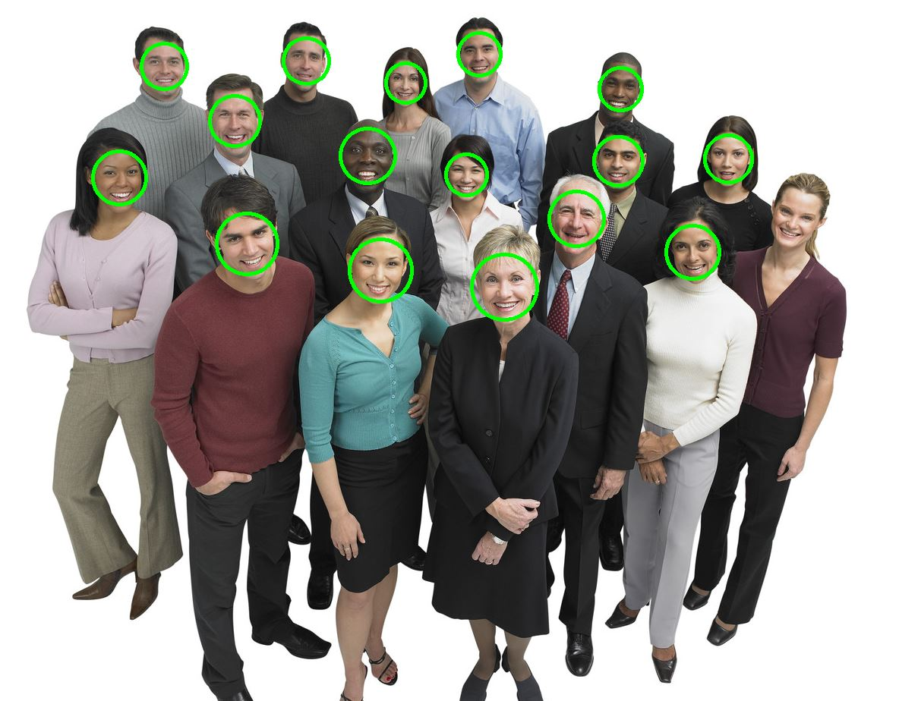
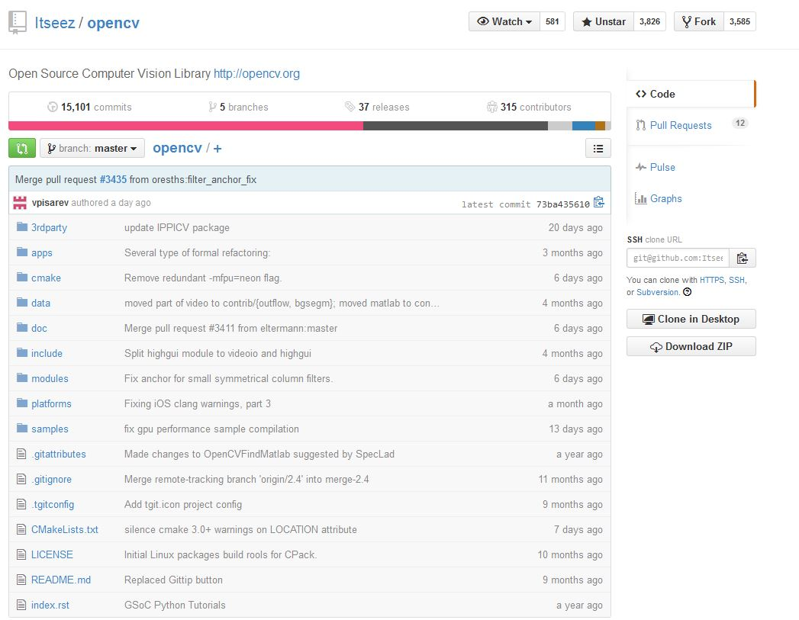
And remember...
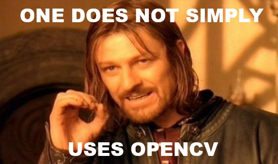
E-mail: adducimi@informatik.hu-berlin.de
Home Page: http://tiny.cc/cvreulke